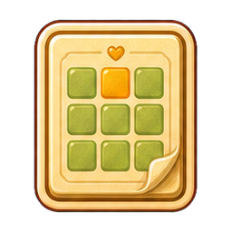
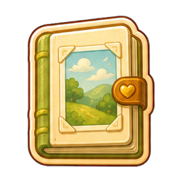
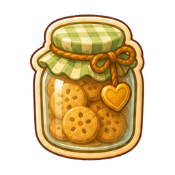
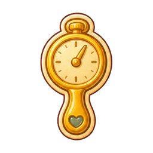

Puzzle

candidateSunny Spoon Studios Art Review
Hidden five-icon raster candidate set. Compare the authored artwork at 144px, the current mobile-menu scale at 48px, and compact trigger scale at 32px before any runtime promotion.

candidate
candidate
candidate
candidate